Speech#
Reading: https://www.dpamicrophones.com/mic-university/facts-about-speech-intelligibility
Speech Chain#
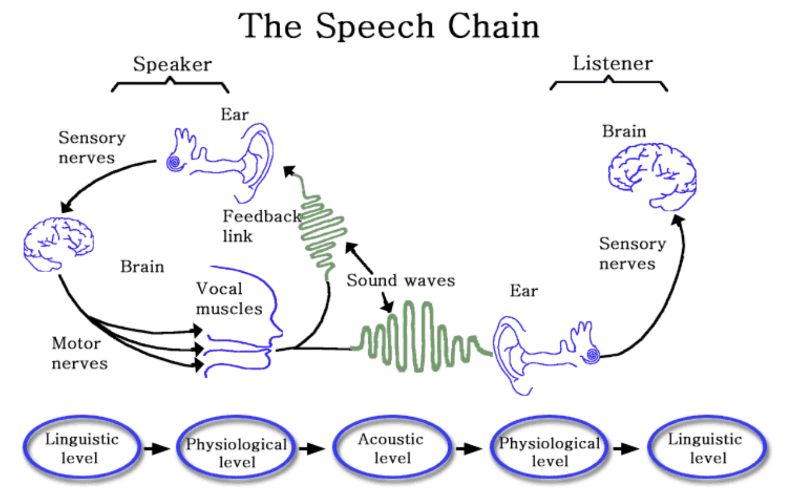
Language The desired thought passes through the language centers of the brain where it is given expression in words which are assembled together in the proper order and given final phonetic, intonational, and durational form.
Motor Program and Muscle Movement The results of the language-production centers of the brain may be considered a speech motor program which executes over time by conveying firing sequences to the lower neurological centers, which in turn impart motion to all of the muscles responsible for speech production: the diaphragm, the larynx, the tongue, the jaw, the lips, and so on. Much if not all of this activity is subconscious, and involves constant corrective feedback.
Airstream in the Vocal Tract As a result of the muscle movements, a stream of air emerges from the lungs, passes through the vocal cords where a phonation type (e.g. normal voicing, whispering, aspiration, creaky voice) is developed, and receives its final shape in the vocal tract before emerging from the mouth and the nose and through the tissues of the face.
Sound Wave The vibrations caused by the vocal apparatus of the speaker radiate through the air as a sound wave.
Electronic Transduction The sound wave may be converted to analog or digital form for storage or transmission, and in the form of electric waves may be transported thousands of miles to its destination, where the information in the electric waves is converted back to the form of sound. It is in the form of an electronic copy of the original sound wave that automatic speech recognition by computer gains access to speech data.
Hearing The sound wave strikes the eardrums of another human being, where it is first converted to waves on the surface of the tympanum membranes, next to mechanical motion via the ossicles of the middle ear, then to fluid pressure waves in the medium bathing the basiliar membrane of the inner ear, and finally to firings in the 30,000 neural fibers which combine to form the auditory nerve.
Auditory and Language Processing The lower centers of the brainstem, the thalamus, the auditory cortex, and the language centers of the brain all cooperate in the recognition of the phonemes which convey meaning, the intonational and durational contours which provide additional information, and the vocal quality which allows the listener to recognize who is speaking and to gain insight into the speaker’s health, emotional state, and intention in speaking.
Understanding The higher centers of the brain, both conscious and subconscious, bring to this incoming auditory and language data all the experience of the listener in the form of previous memories and understanding of the current context, allowing the listener to “manufacture” in his or her mind a more or less faithful “replica” of the thought which was originally formulated in the speaker’s consciousness and to update the listener’s description of the current state of the world. The listener may in turn become the speaker, and vice versa, and the speech chain will then operate in reverse.
From Peter Denes. The Speech Chain
Phonetics#
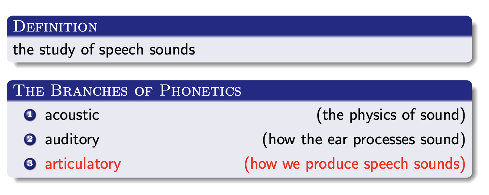
Sound
a compressional wave that produces a sensation in the human ear
Sound waves are longitudinal mechanical waves with the following properties:
Superposition: The existence of one wave does not affect the existence of properties of another wave.”
Reflection: Waves can bounce off a surface like a light wave bounces off a mirror; the reflected angle is equal to the incident angle reflected around the normal to the surface.
Refraction: The passage from one medium to another is normally accompanied by a change of the wavefront direction.
Interference: Two similar waves can combine constructively or destructively; musical beats are an example of this behavior.
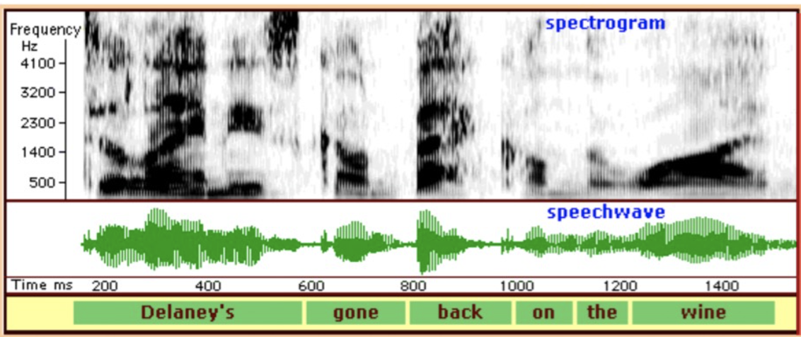
Spectogram is a visual representation of the spectrum of frequencies of a signal. It shows how much energy is at a particular frequency (Hertz - verticla axis) and time (milliseconds - horizontal axis)
Speechwave - a sound wave where the pattern of disturbance is caused by the movement of energy traveling through a medium. It shows how the air molecules move when you speak. If the wave is small, the sound is quiet. Of the wave is tall, the sound is louder. https://australianlinguistics.com/acoustic-analysis-2/
Note
The idea that sound moves in waves goes back (at least) to about 240 B.C. The Greek philosopher Chrysippus (c. 240 B.C.), the Roman architect and engineer Vetruvius (c. 25 B.C.), and the Roman philosopher Boethius (A.D. 480-524) each theorized that sound movement might take a wave form.
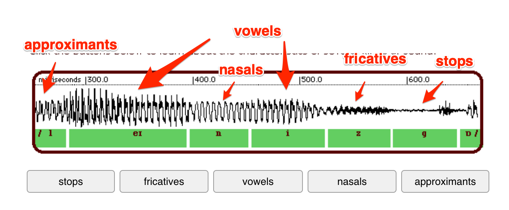
Source: https://australianlinguistics.com/acoustic-analysis-2/speach-waves/
Vowels
A relatively slowly-changing pattern, regular and repeating
It is impossible from the pattern (shape of wave) to predict a vowel
Each cycle of the pattern is one opening and one closing of the vocal cords
Approximants /l,r,w/
similar to vowels but quieter
these are consonants but they do not have any airflow obstraction
Nasals /m,n/
similar repeating wave like vowels but less complex patterns
generally not as tall as vowels
the air comes through the nose, so the wave is quiter than vowels
Fricatives /s,f,v,h,z/
random pattern, rapid change
the air is forced through a narrow passageway and it becomes turbulent and makes a hissing sound
Stops /p,t,d,g/
a flat line with a sudden burst of energy
the pattern is related to the aarticulation of a stop, in which the airflow is stoppped, held briefly and then released with a small explosive sound
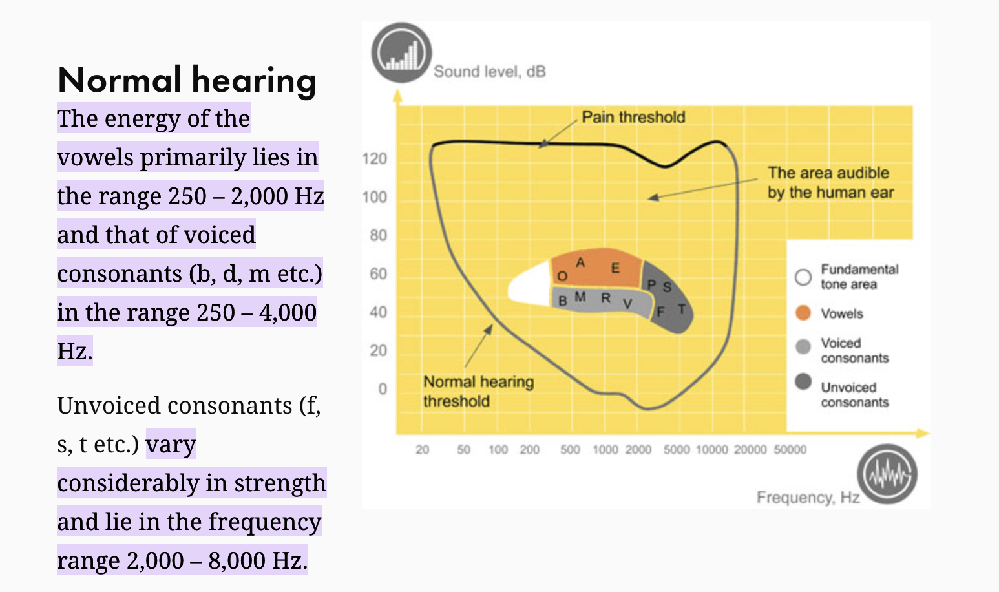
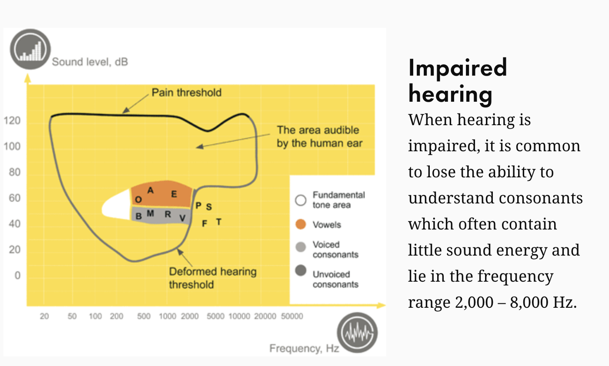
Exercise
Phonetic Alphabet#
Question: Why not use a Roman alphabet to represent sounds?
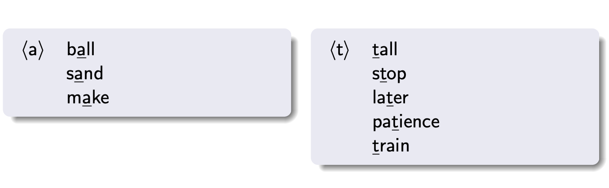
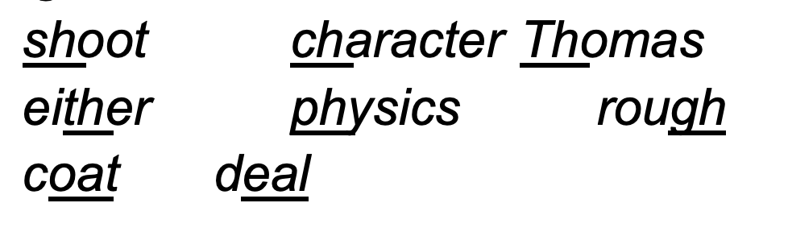
Source: https://scholar.harvard.edu/files/adam/files/phonetics.ppt.pdf
In 1888 the International Phonetic Alphabet (IPA) was invented in order to have a system in which there was a oneto-one correspondence between each sound in language and each phonetic symbol
If you know IPA, you kno whow to pronounce any word in anay language
Phonology#
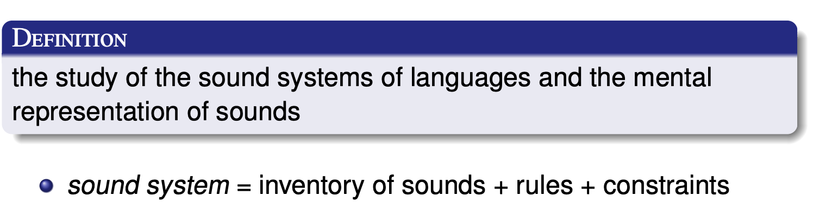
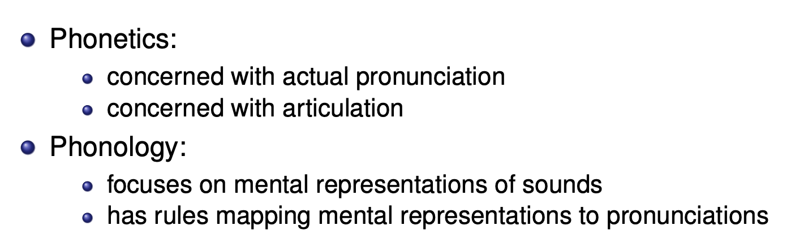
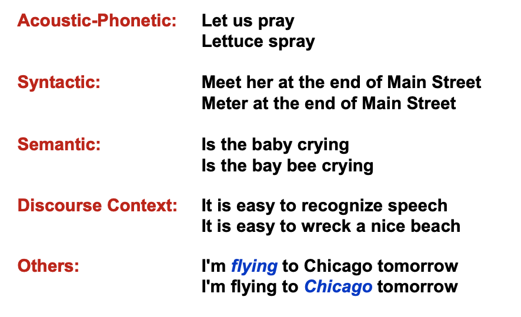 http://www.cs.columbia.edu/~mcollins/6864/slides/asr.pdf